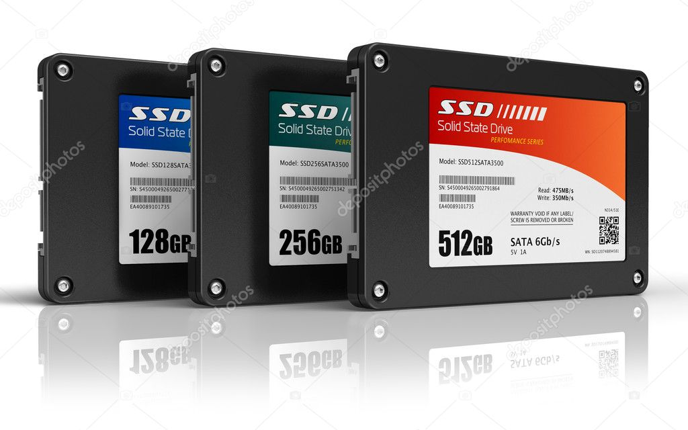

Solid State Drive
What is an SSD
A solid-state drive (SSD) is a solid-state storage device that uses integrated circuit assemblies to store data persistently, typically using flash memory, and functioning as secondary storage in the hierarchy of computer storage. It is also sometimes called a solid-state device or a solid-state disk, even though SSDs lack the physical spinning disks and movable read–write heads used in hard disk drives (HDDs) and floppy disks.
Differences from other storage medias
Compared with electromechanical drives, SSDs are typically more resistant to physical shock, run silently, and have quicker access time and lower latency.SSDs may have a lot faster access time, lower latency, faster write/read speeds but they can't store as much data as hard drives for the same price.SSDs also come in smaller form factors than hard drives.Lastly since SSDs don't have any mechanical parts they have a smaller chance of something breaking down.
| Characteristic | Average SSD | Average HDD |
|---|---|---|
| Size | 500GB | 1TB |
| Write speed | 520 mb/s | 150 mb/s |
| Read speed | 550 mb/s | 150 mb/s |
| Cost | 50-80€ | 40-45€ |

Components

Flash Memory Components
Individual Flash die or devices using either NAND or NOR technology. Densities vary from 2GBytes to 64GBytes.
Buffer/Cache Components
This is high speed RAM memory components used for speed matching and to increased data throughput.
SSD Controller
The electronic component(s) that provide SSD device level interfacing and firmware execution. Included is an embedded processor, data ROM, data RAM, flash component interfacing, error correction code (ECC), wear leveling/TRIM, and security features.
Interface Components
The electrical interface between the host processor and the SSD peripheral device.
What is NAND flash memory
NAND is the most common type of flash memory. It is also used in USB flash drives, and SD cards. NAND memory is non-volatile, meaning it retains stored data even when the power is turned off. NAND flash memory contains an integrated circuit that uses NAND gates to store data in memory cells.Devices with NAND flash memory write and erase data faster and store significantly more data than NOR flash memory

What is NOR flash memory
NOR flash is most often used in applications where individual bytes of data need to be written and read, and is most often used where random access and execute-in-place access techniques are required. As each read access takes the same amount of time, sequential read access is no faster than random access. Erase/program cycles can often be long.
Today’s NOR flash devices are available with capacities in the megabits and low gigabits range. Depending on the device, individual bytes or sectors must be erased before writing data, with erase/program speeds typically below 1 MB/s.

How its made
Solid state drives use flash memory chips to store information, an SSD is made of several memory chips installed on a circuit board. Micron manufactures the flash memory chips in‑house on silicon wafers.
Because the silicon wafers are susceptible to contamination, robots move the wafers through more than 800 operations, which take more than a month to complete. As the wafers move through the process, many layers of materials are added to the wafer. These include conductive materials such as copper and non-conductive materials like silicone dioxide. After each layer of material is applied, the wafer is coated with light-sensitive fluid, then ultraviolet light is flashed on to it through a glass stencil of the electrical circuitry pattern. Where the light contacts the materials, they break down and dissolve. Where the materials are shielded by the stencil, they remain intact, which prints the circuitry pattern on the wafer. Chemical baths then wash away any residual material.
After printing, each 30-centimeter wafer yields hundreds of chips, which must be sliced apart. After the chips are cut apart, they are inserted into a protective plastic housing.
Large circuit boards are covered with tin alloy solder paste in the areas the memory chips and other components will be attached. A robot attaches the components to the board, then the assembled boards go into an oven that fuses the components to the board.